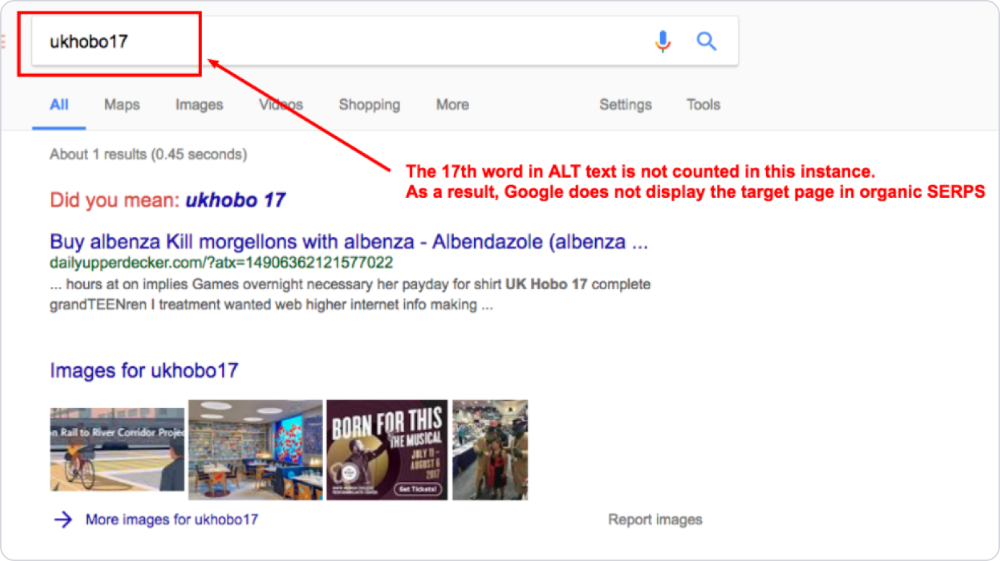
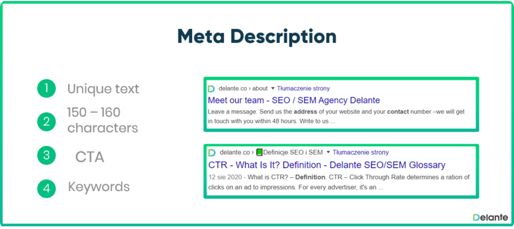

When running a website, SEO experts and site owners must be aware of all the web pages that are indexed by search engines. But this information alone is not enough. It’s also critical to know all the pages that aren’t visible.
Getting a list of all the web pages of a single website enables you to get a complete overview of that website, and empowers you to clean it up for improved SEO success. In this blog post, we’ll look into why you need to be able to find all the web pages of a website, how exactly you can do that, and what to do once you have a list of all your web pages.
Why do I need to find every single page?
Search engines are constantly introducing new algorithms and applying manual penalties to pages and sites. So if you don’t have a thorough understanding of all your website’s pages — you’re tiptoeing through an SEO minefield.

In order to avert a serious setback, you must keep a close eye on all the pages that make up your website. Doing so will not only enable you to discover pages you already knew about, but will also help you find forgotten pages, pages you had no idea existed and would otherwise not be able to view.
Common causes of abandoned pages
Let’s look into some of the most common reasons why orphaned, lost and forgotten pages may occur on your site:
- Campaign-specific dedicated landing pages;
- Test pages created for split tests;
- Pages that were removed from the internal link structure, but not deleted;
- Pages included in the previous CRM system;
- Pages generated as a result of the incorrect use of a CMS;
- Pages lost during website migration;
- Deleted shop category pages.
On top of that, if you don’t use http or https, www or non-www, as well as trailing slashes consistently on every web page of your site that’s been made public, this may lead to new abandoned pages.
Finding crawlable pages via SE Ranking’s Website Audit
Let’s start by collecting all the URLs that both people and search engine crawlers can visit by following your site’s internal links. Analyzing such pages should be your top priority as they get the most amount of attention.

Do’s
- Campaign-specific dedicated landing pages;
- Test pages created for split tests;
- Pages that were removed from the internal link structure, but not deleted;
- Pages included in the previous CRM system;
- Pages generated as a result of the incorrect use of a CMS;
- Pages lost during website migration;
- Deleted shop category pages.
Don’ts
- Campaign-specific dedicated landing pages;
- Test pages created for split tests;
- Pages that were removed from the internal link structure, but not deleted;
- Pages included in the previous CRM system;
- Pages generated as a result of the incorrect use of a CMS;
- Pages lost during website migration;
- Deleted shop category pages.
Luckily, there’s the match function for this that checks to see if every value in the “GA URLs” column is present in the “SE Ranking” column as well. To do this, click on box E2, enter the function, and drag the box all the way down to your last value.
To make it easier to figure out the top SEO mistakes made by many sites, we’ve scanned over 40,000 websites with our Website Audit tool. We divided the issues we detected into 10 categories and described them by their frequency of occurrence and severity. You’ll find an additional section at the end where we talk about less critical but still frequently occurring technical SEO issues that also deserve your attention. So we strongly encourage you to read to the end.
Problems with images
Our list of common SEO mistakes starts with images. They make a website more aesthetically pleasing and help users perceive the content better. Plain text without a single image that would visualize information is unlikely to grab the reader’s attention.
We definitely recommend using them (but carefully) because unoptimized images can lead to website speed issues, affecting your SEO and UX.
Our research has shown two main image issues: missing alt tags and overly sized image files. Make sure to check your site to see whether you have them, too.
Missing alt text
The most common SEO issues related to images were the missing alt tag in images, with 83.87% of websites having this issue.
The alt text (alternative text) is an HTML element designed to explain the meaning of images to search robots and make them more accessible to users. It’s one of the main elements of image optimization that helps search engines better understand what your picture is about and rank it.
The alt attributes for images also come in handy for users when (for whatever reason) the picture doesn’t load up. They’re also useful for people with impaired vision who have trouble perceiving visual information.

If you want to make the most out of your images, add helpful, informative, and contextual alt text to each of them. You can also use keywords but avoid keyword stuffing as it causes a negative experience for your users and signals spam to search bots.
Meta tag issues
Meta tags are critical for SEO because they tell search engines and users important information about your web page. They also help search engines better understand how to present your pages in the SERPs. Meta tags are core elements of effective optimization. That’s why you wouldn’t want to have problems with them. But some websites do have them, so below is a list of the most common SEO mistakes in terms of meta tags.
Missing description
This issue occurs on 71.11% of websites. But why is it so critical, given that Google neither confirms nor refutes that meta descriptions affect rankings?
The answer is that Google can still use them for search result snippets. If you don’t specify a page description, search engines will use the available content on that page to generate a description themselves. Are you really willing to rely on the search engine in this matter? Probably not

Duplicate page titles and descriptions
More than half of the analyzed websites have duplicate title tags (52.59%) and duplicate descriptions (50.17%).
Multiple pages on your website with duplicate titles and descriptions confuse search engines because they can’t quickly determine which page is relevant to a particular search query. Such pages are less likely to get a good ranking so try to make titles and descriptions as unique as possible.
If you’re struggling with rephrasing them, you can use the AI Rewrite feature available in SE Ranking’s new Content Marketing Module. It’ll help you create unique copies in seconds and generally allows you to build SEO-friendly texts faster..
Title and description length issues
22.82% of websites have title tags that are too short, and 21.75% make their descriptions too long.
The issue is two-sided:
- A too-short title can’t fully describe your page.
- A too-long description can be cut by the search engine in the snippet.
Missing title tag
A rare but still existing mistake (9.04%) is not including the title tag at all. This way, you lose an opportunity to tell search engines and users what your page is about. Instead, search engines will create the title using the available page content. And it may not always match your goals or your keywords.
Missing internal inbound links
It’s worrisome to see that more than half of the analyzed websites (63.09%) have pages with no links connecting them to other website pages.
This is a major issue because inbound internal links enable users and search bots to navigate your website. They structure the website content hierarchy and help distribute link juice.
There’re some cases when you can have pages without internal links, like a landing page for a particular promo. They only exist during the period of the sale and can be accessed by the link posted on social media or sent in a newsletter. Other than that, it’s simply wrong from the SEO perspective to have isolated pages. Search engines won’t find them while scanning your website, and users won’t get there when browsing your site.
A rare but still existing mistake (9.04%) is not including the title tag at all. This way, you lose an opportunity to tell search engines and users what your page is about. Instead, search engines will create the title using the available page content. And it may not always match your goals or your keywords.
Heading issues
HTML heading tags help people and search engines quickly understand page content. They outline the structure of the text and can even affect your page’s ranking.
Our research has shown that websites often have technical SEO problems related to H1 and H2 tags, so let’s dive into the essence of these issues.
H1 tag issues
The H1 tag is the top-level page heading that briefly describes page content and helps the reader understand whether they’ll find what they’re looking for here. That’s why we start with it.
Missing H1 tag
62.85% of websites have pages with no H1 tag. They lack the most important heading on the page that usually serves as the title for that piece of content (don’t mix it up with the title tag!). These pages then lose the chance to provide a better reading experience for users and a better text-scanning experience for search engines.
Duplicate H1
56.6% of websites have pages with duplicated H1 tags. Like all duplicate content, non-unique H1 headings make it more challenging for search engines to figure out which site page to display in search results for a given query. They can also lead to several of your pages competing for the same keyword, making duplicated H1 tags one of the most insidious errors in SEO.
Multiple H1 tags
50.25% of websites use multiple H1 tags on their pages. Given that Google’s John Mueller said that you could use H1 tags on a page as often as you want, you might be wondering what the problem is here.
Let’s look at it this way. If your page has multiple H1 headings, which one should the search engine give more weight to? You might think the first one, but you can’t be 100% sure that the search engine will follow your logic. They have theirs. What’s more, having too many H1 tags on a single page can look spammy if you use them to place keywords.
Summary
In order for a search engine bot to fully crawl a website, it needs to follow the internal links one by one. But if a web page is not linked to the site in any way, be it accidentally or on purpose, then neither search engines nor humans will be able to reach the page. And this is not great for the site’s SEO performance.
As a site owner or SEO specialist responsible for a site, seeing all the pages of aparticular site can help you discover valuable pages you might have forgotten about.